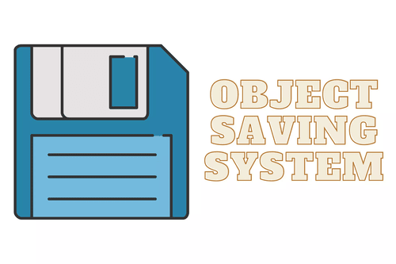
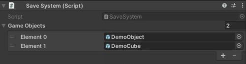

Saving System
This saving system is capable of saving any game object within Unity. It can store not only the object's position and rotation but also its scale and other essential attributes if needed. This allows for a more comprehensive preservation of the object's state, ensuring that when the game is reloaded, everything returns to its exact previous configuration. The system is flexible and can be customized to save additional data, such as custom properties, scripts attached to the object, and even dynamic changes made during gameplay. This makes it a robust solution for creating checkpoints, save states, or restoring complex scenes with ease.

×